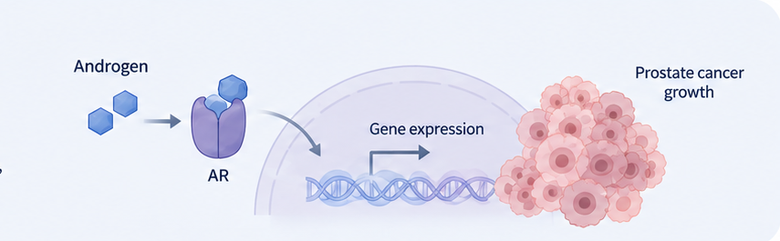
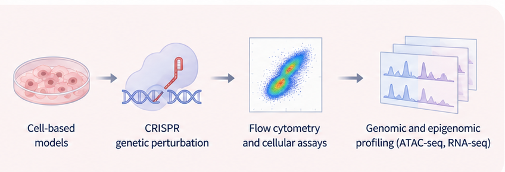
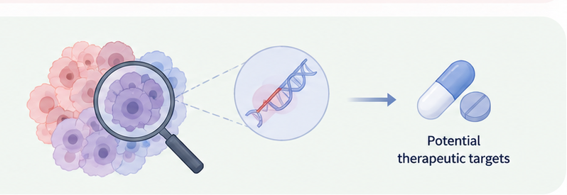

Prostate cancer and therapeutic resistance
Prostate cancer is strongly influenced by androgen receptor (AR) signaling. While therapies targeting the androgen pathway can initially suppress tumor growth, the complex biology of cancer cells can contribute to treatment resistance.

Understanding molecular changes in prostate cancer
My research interests involve combining functional experiments with molecular and genomic approaches to better understand cancer cell biology and identify potential therapeutic vulnerabilities.

Identifying therapeutic vulnerabilities
The broader goal of my research is to contribute to the development of new therapeutic strategies for prostate cancer by identifying molecular mechanisms that contribute to cancer progression and treatment resistance.

Key Experimental Approaches
Cell-Based Assays
Assessing drug responses and changes in cancer cell behavior.
Flow Cytometry
Characterizing cell populations and molecular or genetic changes.
Genomic Profiling
Using approaches such as ATAC-seq and RNA-seq to study molecular changes.
In Vivo Models
Studying tumor biology and therapeutic responses in vivo.
My research combines experimental and genomic approaches to investigate prostate cancer biology and identify new opportunities for therapeutic intervention.